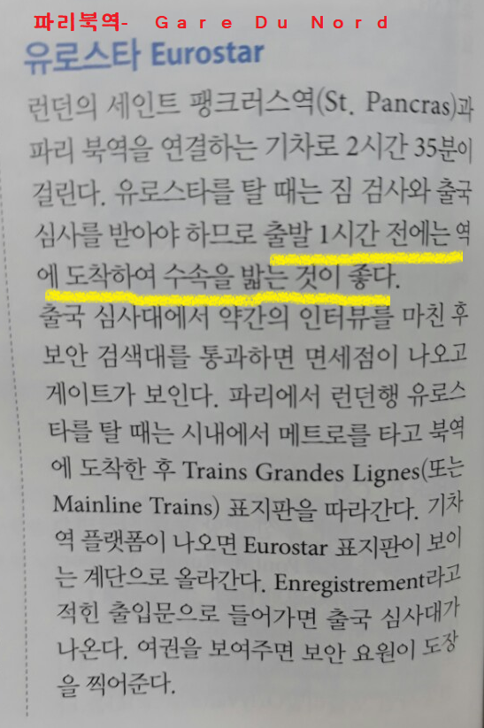

- 유럽 이동 수단
- 숙소
- 각국 정보
- 독일 여행 경로
- 덴마크 관광지
- 독일 관광지-베를린
- 베를린 club
- 독일 관광지-퓌센
- 벨기에 관광지
- 프랑스 관광지
- 런던 여행 계획
- 런던 관광지
유럽 이동 수단
- 인천 - 코펜하겐(덴마크) *왕복
- 스카이 스캐너 예약
- whypaymore 예약
- 유럽행 : 9/2 21시40분 ~ 9/3 6시45분
- 한국행 : 9/23 13시15분 ~ 9/24 11시35분
- 코펜하겐(덴마크) - 베를린(독일)
- 비행기
- 12시25분 코펜하겐에서 출발/이지젯/
- 테겔공항에서 지하철타고 숙소가는법 알아보기(숙소가 중앙역에서 그리 가깝지 않음.)
- 베를린 - 뮌헨 - 퓌센
- 베를린 - 뮌헨
- busradar :기차
- 예약 완료 - 한화 9만 8천원
- 프린트 꼭 예약해가기 - 티켓인데 꼭 가져가야함
- 1시37분~8시도착 : 약 6시간 반 걸림/ 두번환승하는데 환승시간이 3분~5분이라 확인 잘하고 재빠르게 환승해야함!
- 퓌센 - 뮌헨
- 뮌헨(독일) - 브뤼셀(벨기에)
- 비행기: 1시간 20분, 14만원부터
- 뮌헨 중앙역에서 시내까지 약 1시간 걸림.
- 체크인 시간 고려해서 약 3시간 전에 가야할듯

- 벨기에(브뤼셀) - 프랑스(파리)
- 기차
- 탈리스
- 예약
- 1시간반, 29유로/ 두명 75,753원 결제완료
- 브뤼셀 Midi역에서 중앙역으로 가는 열차는 탈리스 당일탑승권 제시하면 무료. - 근데 실물티켓이 필요하다고 한다..이메일티켓 불가능.-우린 중앙역에서 미디역으로 가서 탈리스 타기떄문에 불가능한듯...ㅠㅠ
- 브뤼셀 Midi역-파리북역(소매치기 조심!!!!!!!!!)
- 파리 - 런던
- 유로스타
- 가격, 예매
- 총 98유로/ 한화 144,838원 결제완료
- 2시간 반걸림/ 한시간 전에 가있기/30분 전까지만 탑승가능하는다는 말이있다!!!!/줄도 길어서 한시간 서있고 그랬다는데 덜덜..
- 최소 한시간 전에 가있어야함.(티켓게이트에서 바우처를 티켓으로 바꿔야함.-줄이 길 수도 있음)
- 30분 전 티켓게이트 닫음
- 파리시간 10시13분 ~ 런던시간 11시30분


- 영국(런던) - 덴마크(코펜하겐)